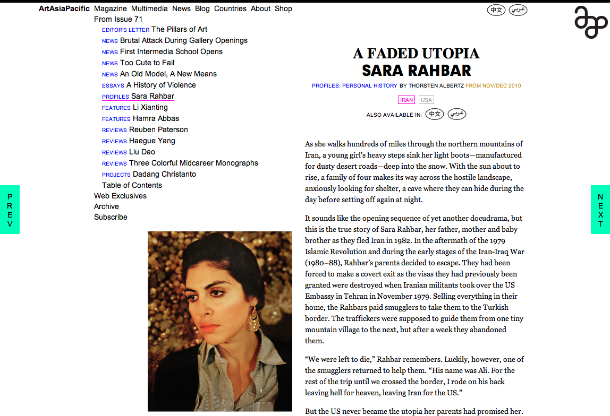
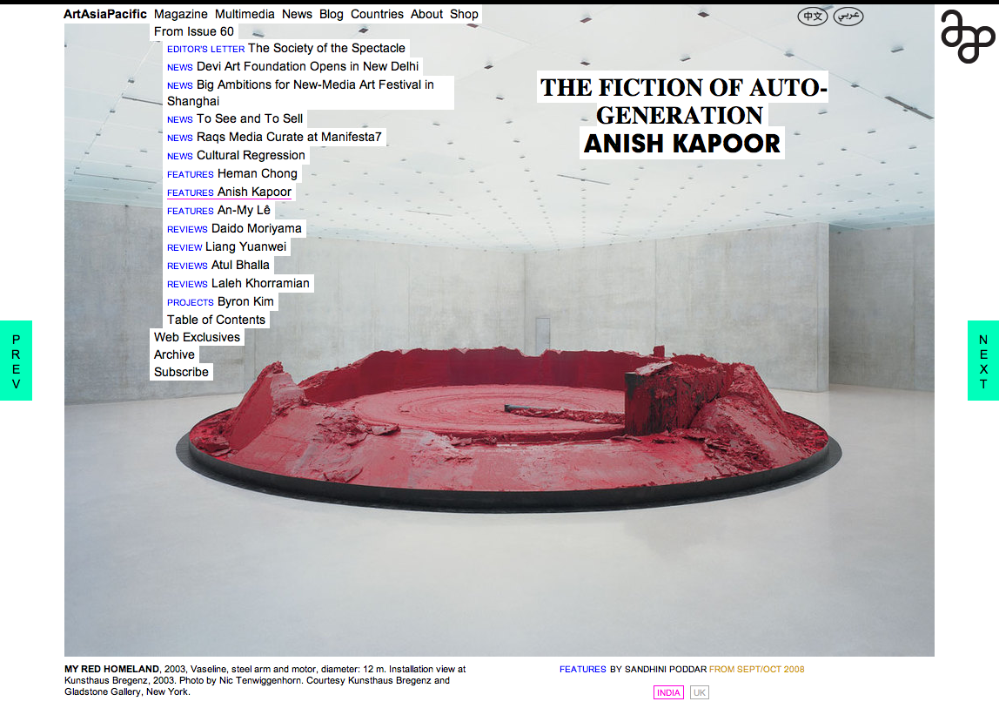
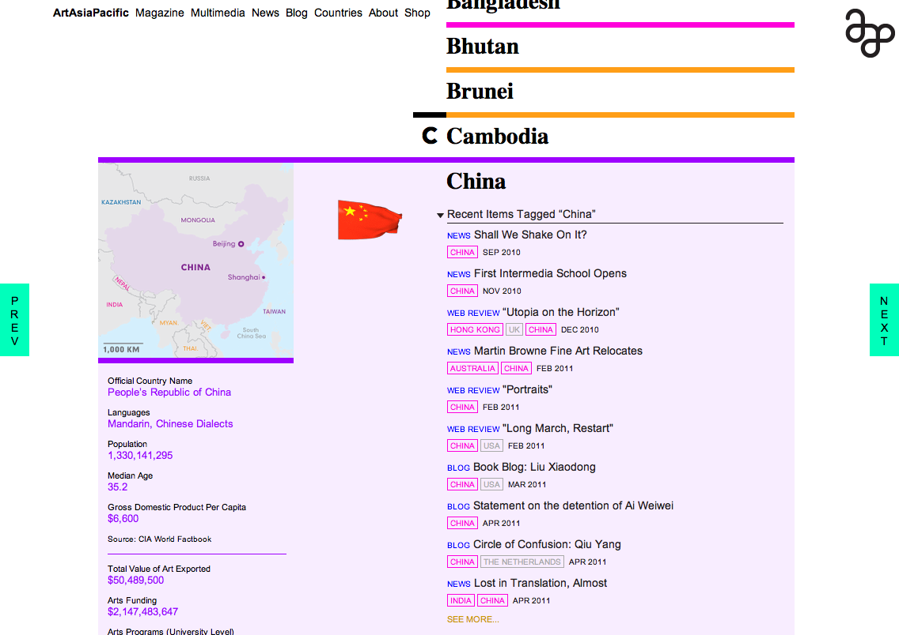
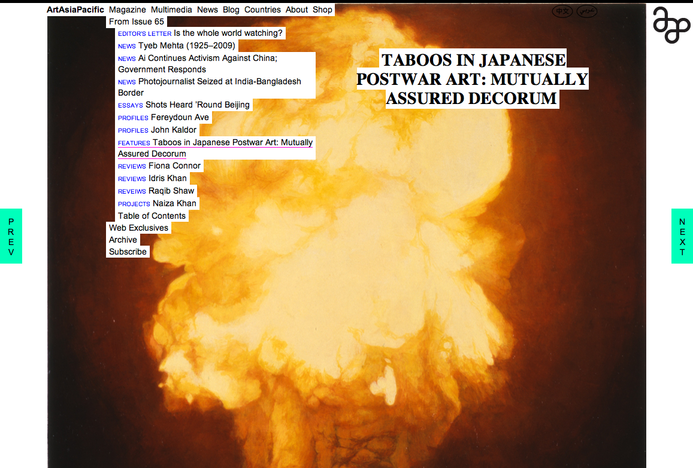

Linked By Air




Printed Matter
Medium:Website, Mobile
Client:ArtAsiaPacific
Year:2011
ArtAsiaPacific’s website is the online version of the English-language magazine that covers contemporary art from Asia, the Pacific, and the Middle East.
The site is structured so that reading is of primary importance. Clicking on the “Magazine” link takes readers directly to the first article, with “Next” and “Previous” buttons – optimized for iPad as well as regular computers – available to transport readers directly to the next relevant piece of content.
To make the articles and other pieces of writing more accessible to the same readers who might not be able to purchase the printed version, we made many articles available through the website in Arabic and Chinese.
The site also features an online store, an area for web-specific projects commissioned by the magazine, and a lively blog.